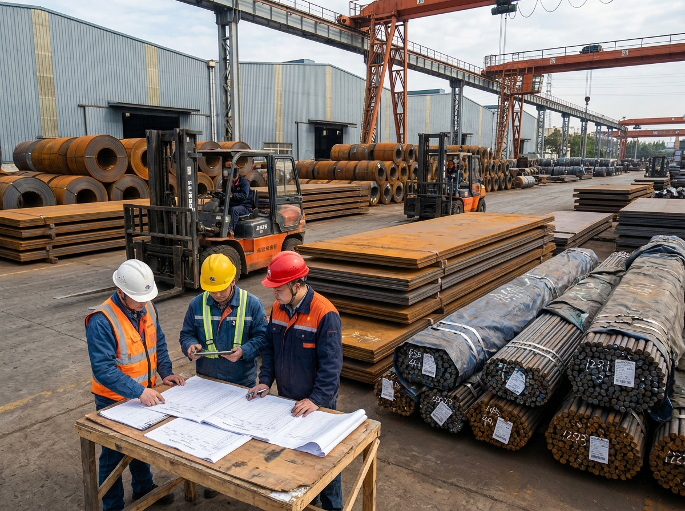
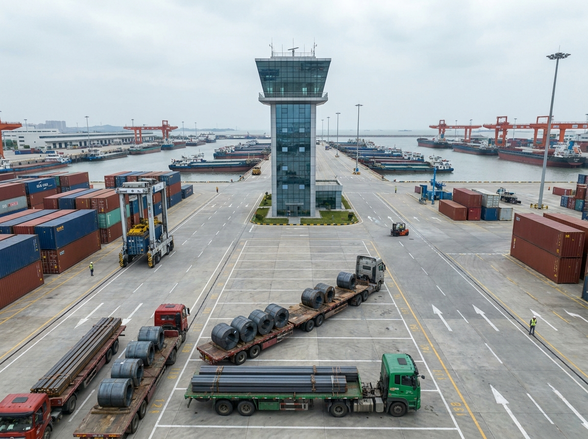

China's steel export discussion in early June is easy to oversimplify. One set of headlines emphasizes oversupply and weak global demand. Another highlights resilient logistics and active export channels. Both are true, but they describe different layers of the market. Buyers who treat them as contradictory may miss the more useful conclusion: cargo selection and execution discipline now matter more than any single macro label.
进入 6 月初后，关于中国钢材出口的讨论很容易被过度简化。一类 headline 强调供给过剩和全球需求疲弱，另一类则强调物流韧性和活跃的出口通道。这两种说法其实都成立，只是它们描述的是市场的不同层面。若买家把它们理解为彼此矛盾，就会错过更有价值的结论：与其纠结单一宏观标签，不如更重视货种选择与执行纪律。
For YQ Steel's customer base, the practical question is not whether China still has steel to export. The real question is which products can move with the least friction, which routes are becoming more dependable, and where market pressure is likely to create either opportunity or hidden risk. Recent data on semis, ports, and capacity gives a clearer framework for answering that question.
对 YQ Steel 的客户群体来说，真正重要的问题并不是“中国是否还有钢材可出口”。更核心的判断在于：哪些产品能以更低摩擦完成出运，哪些航线正在变得更稳定，以及哪些市场压力会转化为机会，哪些又会演变成隐藏风险。近期围绕半成品、港口和产能的数据，为这一判断提供了更清晰的框架。
1) Semi-finished exports are carrying more of the outbound momentum
Late-May reporting based on Chinese customs data showed that China's semi-finished steel exports reached 4.94 million metric tons in January through April 2026, up 47.77 percent year on year. April alone reached 1.64 million metric tons, also showing strong annual growth. That is not a marginal data point. It indicates that overseas markets are still absorbing a large volume of upstream or less-processed steel when the commercial path is workable.
基于中国海关数据的 5 月下旬报道显示，2026 年 1 至 4 月中国半成品钢出口达到 494 万吨，同比增长 47.77%；其中 4 月单月出口 164 万吨，同样保持强劲同比增长。这并不是一个边缘数据，而是在说明：只要商业路径可操作，海外市场仍在吸收相当规模的上游或较低加工度钢材。
That shift matters even for buyers focused on finished products. When mills can release more tonnage through semi-finished channels, they gain flexibility in how they balance capacity, order books, and pricing discipline. In other words, stronger semi-finished movement can reduce the pressure to discount every finished order aggressively. The June market therefore needs to be read by channel strength, not by one overall export narrative.
这一变化即便对成材买家也同样关键。只要钢厂能够通过半成品渠道释放更多吨位，它们在平衡产能、订单簿和价格纪律时就会获得更大灵活性。换句话说，半成品流动性增强，往往会降低钢厂对每一票成材订单激进让价的必要性。因此，6 月市场需要按“不同出口通道的强弱”来理解，而不是依赖一个总括性的出口叙事。
2) Port throughput shows execution capacity is still expanding
At the logistics level, the message remains constructive. China Daily reported that in the first four months of 2026, China's ports handled 5.93 billion metric tons of cargo, up 3.1 percent year on year, while container throughput rose 7.2 percent to 120 million TEUs. Foreign-trade container throughput increased even faster, reaching 75.23 million TEUs, up 10.9 percent. Those numbers point to a system that is still building usable export capacity rather than losing it.
在物流层面，当前信号仍偏积极。China Daily 报道称，2026 年前四个月中国港口完成货物吞吐量 59.3 亿吨，同比增长 3.1%；集装箱吞吐量达到 1.2 亿标箱，同比增长 7.2%；外贸集装箱吞吐量增速更快，达到 7523 万标箱，同比增长 10.9%。这些数字说明，中国港口体系仍在持续增加可用的出口能力，而不是在收缩。

That matters because many buyers still assume that any export-heavy market must eventually run into logistics congestion. Current evidence points in the opposite direction. China's broader shipping narrative suggests route density, fleet depth, and smart-port investment remain supportive. For steel cargo, this means the weakest link is often no longer the port itself, but the preparation quality of the order moving through it.
这一点之所以重要，是因为许多买家仍然默认：只要市场偏向出口，最终就会遭遇物流拥堵。但当前证据更接近相反方向。中国更广泛的航运叙事说明，航线密度、船队深度和智慧港口投入仍在提供支持。对钢材货盘而言，这意味着最薄弱的环节往往已不再是港口本身，而是订单进入港口前的准备质量。
3) OECD pressure means volume alone is not a comfort signal
The demand side remains much less comfortable. On June 4, 2026, the OECD warned that global steel demand recovery is expected to remain weak and that excess capacity could reach 745 million tonnes by 2028. That warning matters because it explains why active exports can coexist with uneasy pricing, selective buying, and continuing trade friction. A market can move a lot of steel and still be structurally pressured.
需求侧的环境则明显没有那么轻松。2026 年 6 月 4 日，OECD 警示全球钢材需求复苏预计仍将偏弱，且到 2028 年全球过剩产能可能达到 7.45 亿吨。这一警示很重要，因为它解释了为什么“出口活跃”可以与“价格承压、买方选择性增强、贸易摩擦延续”同时存在。一个市场即便在出大量钢，也依然可能处于结构性压力之下。
For buyers, this is where analytical discipline becomes essential. Rising semi-finished exports should not be read as proof that every steel category is strengthening. Instead, it is evidence that some products are finding workable channels faster than others. Excess-capacity pressure means suppliers may still compete hard in certain lanes, but that competition will not be evenly distributed across plate, coil, pipe, long products, and semi-finished cargo.
对买家来说，这正是分析纪律变得关键的地方。半成品出口上升，并不能被简单理解为所有钢材品类都在同步走强。更准确的含义是：某些产品正在比另一些产品更快地找到可操作的出口通道。过剩产能压力意味着，供应商在某些赛道上仍会激烈竞争，但这种竞争不会在板材、卷材、管材、长材和半成品之间均匀分布。
4) June buyers need to read mill behavior structurally
A supplier with better clarity on raw-material coverage, export route options, and order-book composition is less likely to sell indiscriminately. That helps explain why some June offers may look firmer than macro headlines imply. Buyers should avoid assuming that general market softness automatically produces the best commercial outcome. The more useful edge often comes from matching the right product to the right route before negotiating the final number.
对那些在原料保障、出口航线选择和订单结构上更有把握的供应商而言，其销售行为往往不会是无差别式的。这也解释了为什么部分 6 月报价会比宏观 headline 所暗示的更坚挺。买家不应默认“市场整体偏弱”就一定意味着最优商业结果。更有效的优势，通常来自先把正确产品匹配到正确航线，再去谈最终价格。
5) What June buyers should change now
First, segment procurement by channel. Semi-finished cargo, commodity-grade coil, structural sections, and specification-heavy orders should no longer be evaluated under one shared assumption about Chinese steel exports. Each category now carries a different combination of pricing pressure, route stability, and documentation burden.
第一，按出口通道对采购进行分层。半成品货盘、普通卷材、结构型钢以及规格要求更重的订单，不应再被放在同一套关于“中国钢材出口”的假设下评估。当前每个品类所承受的价格压力、航线稳定性和单证负担都已不同。
Second, test execution before price. Buyers should verify loading windows, destination acceptance, certificate readiness, and whether the supplier can confirm the shipping path clearly in writing. In a market where port throughput is improving but demand recovery remains weak, a clean order structure is often more valuable than a nominally lower offer that may need amendments later.
第二，把执行核验放在价格之前。买家应先确认装运窗口、目的地接受度、证书准备情况，以及供应商是否能以书面形式清晰确认运输路径。在一个“港口吞吐改善但需求复苏仍弱”的市场里，结构干净的订单往往比名义价格更低、但后续可能频繁改单的报价更有价值。

Third, read logistics strength correctly. Stronger ports do not eliminate risk, but they do change where the risk sits. The commercial challenge is shifting away from pure shipping access and toward cargo design, market fit, and execution quality. That is exactly where disciplined sourcing teams can gain an advantage in June.
第三，正确理解物流韧性。更强的港口能力并不会消除风险，但它会改变风险所在的位置。商业挑战正从“能否获得基础航运通道”转向“货盘设计是否合理、市场匹配是否准确、执行质量是否可靠”。而这恰恰是有纪律的采购团队能够在 6 月建立优势的地方。
Takeaway
China's steel market in early June 2026 is neither simply strong nor simply weak. Semi-finished exports are rising fast, ports are still expanding foreign-trade handling capacity, and the global market remains under excess-capacity pressure. For buyers, the right response is to stop reading the market as one block and start making product-specific, route-specific, and execution-specific decisions. That is where June purchasing quality will be decided.
2026 年 6 月初的中国钢材市场，既不能被简单定义为“强”，也不能被简单定义为“弱”。半成品出口正在快速上升，港口外贸承载能力仍在扩大，而全球市场依旧承受过剩产能压力。对买家来说，正确的应对方式，是停止把市场视为一个整体，而开始做出按产品、按航线、按执行路径细分的决策。6 月采购质量的高低，正是在这些地方被决定的。